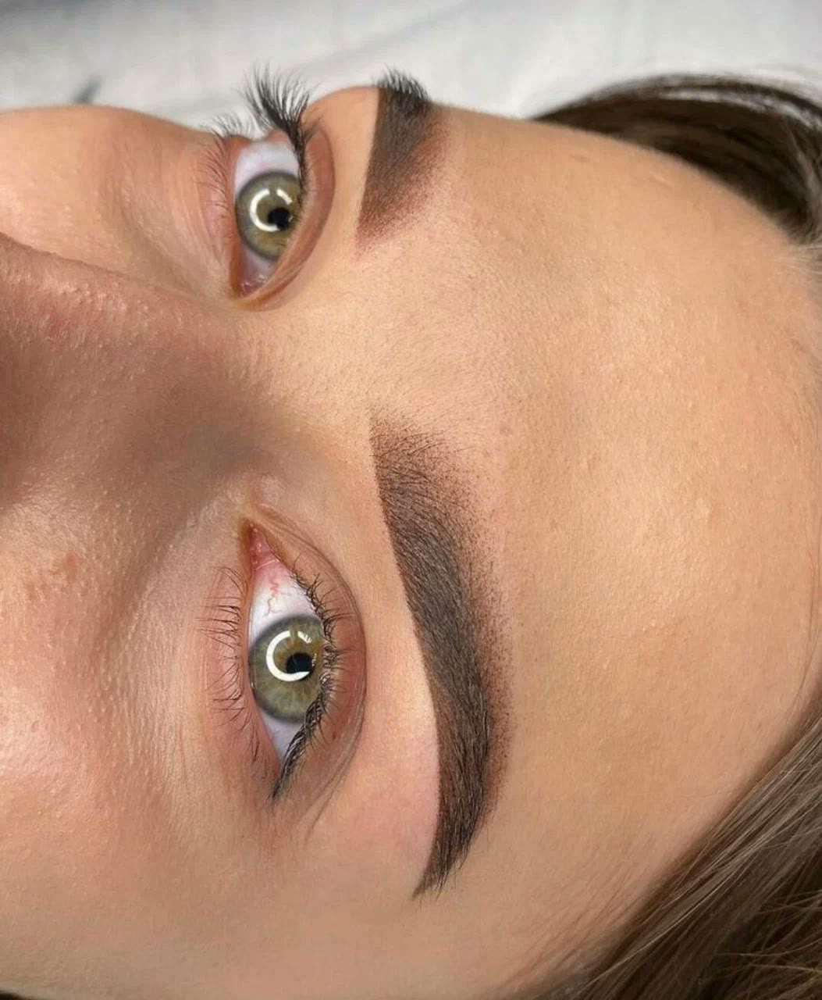
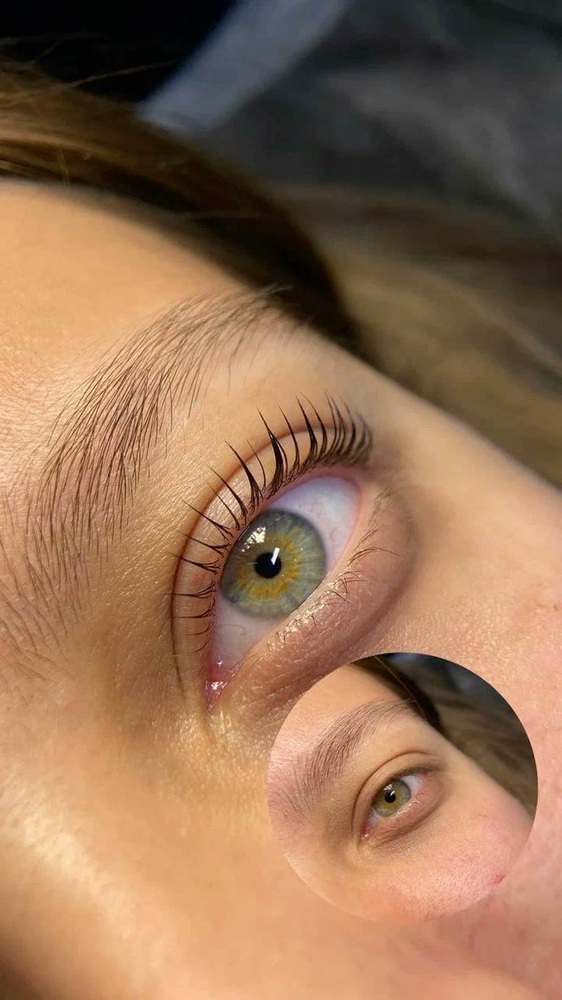

Перманентный макияж
Губы, брови, веки и межресничное пространство
- Длительность1,5–2,5 часа
- Держится1–3 года
- КоррекцияЧерез 4–6 недель
- Стоимость8 000 ₽
Брови, губы, веки — профессиональный перманентный макияж с долгосрочным результатом. Мастер Жанна Спиридонова.

Опытный мастер перманентного макияжа · Саратов
Влюблена в своё дело и хочу помочь как можно большему количеству женщин чувствовать себя привлекательными вне зависимости от внешних обстоятельств. В студии вы можете получить услуги перманентного макияжа бровей, губ и межресничного пространства, удалить старый татуаж или татуировку, сделать массаж лица и мини-тату.
В студии вы можете получить услуги перманентного макияжа бровей, губ и межресничного пространства, удалить старый татуаж или татуировку, сделать массаж лица и мини-тату.
Без труда подберу идеальную форму бровей, подходящую именно вам, сделаю привлекательные губы или подчеркну веки нежной межресничкой.
Прошла обучение и повышение квалификации по всем зонам у ТОП-мастеров:
Каждая услуга — конкретный результат, точное время и фиксированная стоимость. Без «от» и «примерно».
Губы, брови, веки и межресничное пространство

Исправление ошибок некачественного перманентного макияжа

Специальная техника нанесения для возрастной кожи
Небольшие татуировки для вашей индивидуальности

Удаление с помощью ремувера

Окрашивание, коррекция, укладка и осветление бровей
Самый частый страх — «а вдруг сделают не то». Поэтому эскиз согласуется до работы, а не после.
Смотрим тип кожи, разбираем чего хочется и что реально получится именно на вашем лице.
Рисуем форму карандашом. Пока эскиз не нравится — машинку не берём.
Обезболивающий крем, ждём 20–30 минут. Дальше — лёгкое покалывание.
Полтора–два с половиной часа в зависимости от зоны и техники.
Краснота уходит за сутки, корочки — за 5–10 дней. Инструкция по уходу на руки.
Через 4–6 недель дорабатываем цвет и форму по зажившему результату.
Как это выглядит вживую — стерильные материалы, одноразовые модули, спокойная обстановка.


Свежие работы из студии.
Девочки, это не мастер, а чудо. Сколько я мучалась со своими бровями и другими мастерами — всё не то и деньги на ветер. По рекомендации узнала о Жанне и как я рада что с ней встретилась. Не могу насмотреться на свои бровки, они красивые!
Хочу выразить огромную благодарность за потрясающий результат! Сделала ламинирование ресниц и перманентный макияж, и осталась в полном восторге. Ресницы выглядят естественно и красиво, а перманент подчёркивает черты, не требуя ежедневной косметики.
Огромное спасибо за профессиональный и индивидуальный подход к клиенту! Результат работы радует каждый день и позволяет невероятно экономить драгоценное время и деньги.
Сразу как увидела Жанну — она мне понравилась как человек, а мастер вообще великолепна. Приезжаю к ней с удовольствием из другого района. Советую!
Отличная работа, делала ультразвуковую чистку, обязательно приду ещё. Уже записалась на брови. Мастера рекомендую!
Отличный мастер! Хожу всегда к ней на брови и на чистку. Очень рекомендую.
Обучение и повышение квалификации по всем зонам. Нажмите, чтобы рассмотреть.


г. Саратов
ул. имени А.В. Плякина, 1Б, Саратов
Запись по предварительному согласованию
Есть свободные окошки — пишите «ЗАПИСЬ» в ВК